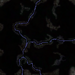
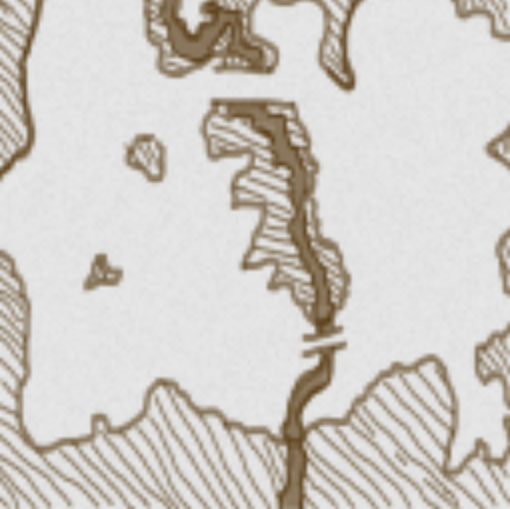
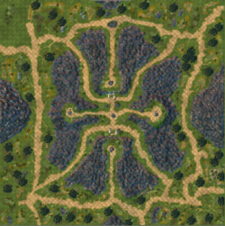
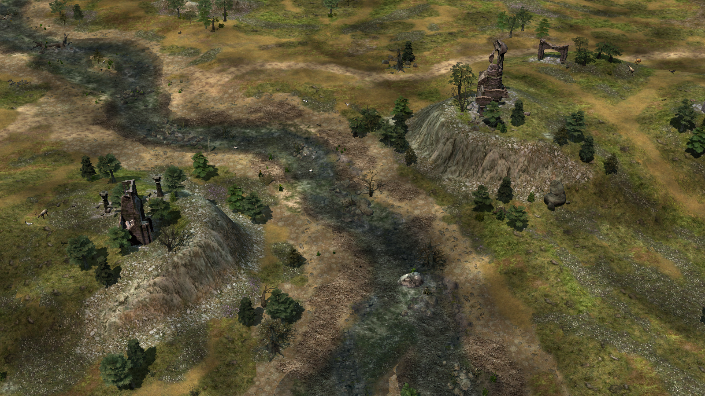
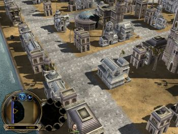
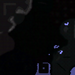
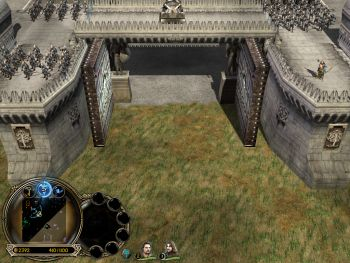

Rhun III
Minimap

- Player
- 8
- Neutral Buildings
- Inn, Outpost, Signalfire
- Creeps
- Dragons, Trolls, Goblins, Wargs
- Size
- 500x500
Description
Unknown
- Creator
- Baions
- Year
- 2011
Screenshots
Not available

Unknown
Not available

Unknown
Not available

Unknown

Not available
Fortress of Harad is a fortress skirmish map in Harad. Two players start in the fortress and six players start outside the fortress.

One player is in Angband. Three small cities of elves are in forest.
Not available
Not available
On this map, two players are defending on a strong island against four other players surrounding the island.
There is a command line in one of the files joined with the map that makes Worldbuilder crash.
Not available

The Two Fortresses is a six player skirmish map. Three players start in each fortress.

This map is simple, littered with ruins, creeps and random assortments of stuff. There are four players in this map: one starting point is based in a forest, the other three eclipsed by mountains.
There is also a small encampment to the far east of rangers and ruins. These are creeps, so players cannot become them. The map is especially fun for 2v2.
Not available